3+5[1] 8This practical intend to prepare students who have limited experiences with R and RStudio. The content are adapted based on
Brunsdon, Chris, and Lex Comber. 2018. An Introduction to r for Spatial Analysis and Mapping (2e). Sage.
Comber, Lex, and Chris Brunsdon. 2021. Geographical Data Science and Spatial Data Analysis: An Introduction in r. Sage.
R is a free, open-source programming language used for statistical analysis, data visualization, and data science
RStudio is a free front-end to R, designed to make using R easier
All of the PCs in the University PC Teaching Centre used for this class come with R and RStudio pre-installed, as do the PCs in many other University PC Teaching Centres.
However, you may wish to install R and RStudio on your own computer, or on a University PC that lacks them.
University computers: Use the Install University Applications app on the computer to install the latest version of RStudio (this will also install the latest version of R)
Your own computer: R and RStudio can be downloaded from the CRAN website and installed your own computer - see below for details. A key point is that you should install R before you install RStudio.
The simplest way to get R installed on your computer is to go the download pages on the R website - a quick search for `download R’ should take you there, but if not you could try:
The Windows and Mac version come with installer packages and are easy to install whilst the Linux binaries require use of a command terminal.
RStudio can be downloaded from https://www.rstudio.com/products/rstudio/download/ and the free version of RStudio Desktop is more than sufficient for this module and all the other things you will to do at degree level.
If you experience any problems installing R or RStudio on your own computer, bring it to one of the class lab sessions where we will be able to provide advice.
Before you start installing software or downloading data, create a folder on your M-Drive (if working on a University networked machine) or locally if working on your own device – name this ‘ENVS162’ and within this create a sub-folder for each practical session. For this session, create a sub-folder called Week1 in your ENVS162 folder on your M-Drive. Take care to ensure you do not delete any work you do complete in the practical sessions. It is imperative that you practice good file management!
RStudio provides an interface to the different things that R can do via the 4 panes: the Console where code is entered (bottom left), a Source pane with R scripts (top left), the variables in the working Environment (top right), Files, Plots, Help etc (bottom right) - see the RStudio environment in Figure below.
In the figure above of the RStudio interface, a new script has been opened, a line of code had been written and then run in the console. The code assigns a value of 100 to x. The file has been saved into the current working environment. You are expected to define a similar set up for each practical as you work through the code. Note that in the script, anything that follows a # is a comment and ignored by R.
Users can set up their personal preferences for how they like their RStudio interface. Similar to straight R, there are very few pull-down menus in R, and therefore you will type lines of code into your script and run these in what is termed a command line interface (the console). Like all command line interfaces, the learning curve is steep but the interaction with the software is more detailed which allows greater flexibility and precision in the specification of commands.
Beyond this there are further choices to be made. Commands can be entered in two forms: directly into the R console window or as a series of commands into a script window. We strongly advise that all code should be written in a script - (a .R file) and then run from the script. - To run code in a script, place the cursor on the line of code and then run by pressing the ‘Run’ icon at the top left of the script pane, or by pressing Ctrl Enter (PC) (or Cmd Enter on a Mac).

The first set of consideration relate to how you should work in R/RStudio. The key things to remember are:
R is a learning curve if you have never done anything like this before. It can be scary. It can be intimidating. But once you have a bit of familiarity with how things work, it is incredibly powerful.
You will be working from practical worksheets which will have all the code you need. Your job is to try to understand what the code is doing and not to remember the code. Comments in your code really help.
To help you do this, the very strong suggestion is use the R scripts that are provided, and that you add your own comments to help you understand what is going on when you return to them. Comments are prefaced by a hash (#) that is ignored by R. Then you can save your code (with comments), run it and return to it later and modify at your leisure.
The module places a strong emphasis placed on learning by doing, which means that you encouraged to unpick the code that you are given, adapt it and play with it. It is not about remembering or being able to recall each function used but about understanding what is being done. If you can remember what you did previously (i.e. the operations you undertook) and understand what you did, you will be able to return to your code the next time you want to do something similar. To help you with this you should:
Always run your code from an R script… always! These are provided for each practical;
Annotate you scripts with comments. These are prefixed by a hash (#) in the code;
Save your R script to your folder;
::: {#To summarise} To summarise…
You should always use a script (a text file containing code) for your code which can be saved and then re-run at a later date.
You can write your own code into a script, copy and paste code into it or use an existing script (for example as provided for each of the R/RStudio practicals in this module).
To open a new R script go to File > New File > R Script to open a new R file, and save it with a sensible name.
To load an existing script file go to File > Open File and then navigate to your file. Or, if you have recently opened the file, go to File > Recent Files >.
It is good practice to set the working directory at the beginning of your R session. This can be done via the menu in RStudio Session > Set Working Directory > …. This points the R session to the folder you choose and will ensure that any files you wish to read, write or save are placed in this directory.
To run code in a script, place the cursor on the line of code and then run by pressing the ‘Run’ icon at the top left of the script pane, or by pressing Ctrl Enter (PC) or Cmd Enter (Mac). :::
In this section you will undertake a few generic operations. You will:
undertake assignment: the allocation of values to an R object.
use assignment to create a vector of elements and a matrix of elements.
undertake operations on R objects.
apply some functions to R objects (functions nearly always return a value).
access some of R in-built data to examine a data table (or data.frame which is like an Excel spreadsheet).
do some basic plotting, including scatter plots and histograms.
create data summaries.
On the way you will also be introduced to indexing.
First, you should create a new R script (see above) and save it as week1.R in the working directory you are using for this practical. This should be the Week1 sub-directory you created in the GEOG162 folder. Note that you should create a separate folder for each week’s practical.
The command line prompt in the Console window, the >, is an invitation to start typing in your commands.
Write the following into your script: 3+5 and run it. Recall that code is run done by either by pressing the Run icon at the top left of the script pane, or by pressing Ctrl Enter (PC) or Cmd Enter (Mac).
3+5[1] 8Here the result is 8. The [1] that precedes the output it formally indicates, first requested element will follow. In this case there is just one element. The > indicates that R is ready for another command.
Now type the following in to your script and run it:
y <- 3+5
y[1] 8Here the value of the 3+5 has been assigned to y. The syntax y <- 3+5 can be read as y gets 3+5. When y is invoked its value is returned (8).
For the purposes of this module, in R the equals sign (=) is the same as <-, a left diamond bracket < followed by a minus sign -. This too is interpreted by R as is assigned to or gets when the code is read right to left.
Now copy and paste the following into your R script and run both lines:
x <- matrix(c(1,2,3,4,5,6,7,8), nrow = 4)
y = matrix(1:8, nrow = 4, byrow = T)You should see the x appear with the y in the Environment pane. y has now been overwritten with a new assignment. If you click on the icon next to them, you will get a ‘spreadsheet’ view of the data you have created.
Of course you can also enter the following in the console and see what is returned:
x [,1] [,2]
[1,] 1 5
[2,] 2 6
[3,] 3 7
[4,] 4 8y [,1] [,2]
[1,] 1 2
[2,] 3 4
[3,] 5 6
[4,] 7 8Note In the code snippets above you have used parentheses - round brackets. Different kinds of brackets are used in different ways in R. Parentheses are used with functions, and contain the arguments that are passed to the function, separated by commas (,).
In this case the functions are c() and matrix(). The function c() combines or concatenates elements into a vector, and matrix() creates a matrix of elements in a tabular format.
In the line of code x = matrix(c(1,2,3,4,5,6,7,8), nrow = 4), the arguments passed to the matrix() function are the vector of values c(1,2,3,4,5,6,7,8) and nrow = 4. Other kinds of brackets are used in different ways as you will see later.
One final thing to note is that the matrix is y is has the numbers 1 to 8, but this is specified by 1:8. Try entering 3:65, 19:11, and 1.5:5 to see how the colon (:) works in this context.
Now you can undertake operations on R objects and apply functions to them. Write the following code into your script and then run it:
# x is a matrix
x [,1] [,2]
[1,] 1 5
[2,] 2 6
[3,] 3 7
[4,] 4 8# multiplication
x*2 [,1] [,2]
[1,] 2 10
[2,] 4 12
[3,] 6 14
[4,] 8 16# sum of x
sum(x)[1] 36# mean of x
mean(x)[1] 4.5Operations can be undertaken directly using mathematical notation like * for multiplication or using functions like max to find the maximum value in an R object.
Functions are always followed by parenthesis (round brackets) ( ). These are different from square and curly brackets [ ] and { }. Functions always return something, a result if you like, and have the generic form:
# don't run this or write this into your script!
result = function(value or R object, other parameters)Do not run or enter this code in your script - it is an example!
Here we will load a data table in data.frame (like a spreadsheet) in R/RStudio. R has number of in-built datasets that we can use the code below loads one of these:
data(mtcars)
class(mtcars)[1] "data.frame"Have a look at what is loaded by listing the objects in the current R session
ls()[1] "mtcars" "x" "y" You should see the mtcars object. You can examine this data in a number of ways
# the structure of mtcars
str(mtcars)'data.frame': 32 obs. of 11 variables:
$ mpg : num 21 21 22.8 21.4 18.7 18.1 14.3 24.4 22.8 19.2 ...
$ cyl : num 6 6 4 6 8 6 8 4 4 6 ...
$ disp: num 160 160 108 258 360 ...
$ hp : num 110 110 93 110 175 105 245 62 95 123 ...
$ drat: num 3.9 3.9 3.85 3.08 3.15 2.76 3.21 3.69 3.92 3.92 ...
$ wt : num 2.62 2.88 2.32 3.21 3.44 ...
$ qsec: num 16.5 17 18.6 19.4 17 ...
$ vs : num 0 0 1 1 0 1 0 1 1 1 ...
$ am : num 1 1 1 0 0 0 0 0 0 0 ...
$ gear: num 4 4 4 3 3 3 3 4 4 4 ...
$ carb: num 4 4 1 1 2 1 4 2 2 4 ...# the first six rows (or head) of mtcars
head(mtcars) mpg cyl disp hp drat wt qsec vs am gear carb
Mazda RX4 21.0 6 160 110 3.90 2.620 16.46 0 1 4 4
Mazda RX4 Wag 21.0 6 160 110 3.90 2.875 17.02 0 1 4 4
Datsun 710 22.8 4 108 93 3.85 2.320 18.61 1 1 4 1
Hornet 4 Drive 21.4 6 258 110 3.08 3.215 19.44 1 0 3 1
Hornet Sportabout 18.7 8 360 175 3.15 3.440 17.02 0 0 3 2
Valiant 18.1 6 225 105 2.76 3.460 20.22 1 0 3 1The mtcars object is a data.frame, a kind of data table, and it has a number of attributes which are all numeric. The code below prints it all out to the console:
mtcars mpg cyl disp hp drat wt qsec vs am gear carb
Mazda RX4 21.0 6 160.0 110 3.90 2.620 16.46 0 1 4 4
Mazda RX4 Wag 21.0 6 160.0 110 3.90 2.875 17.02 0 1 4 4
Datsun 710 22.8 4 108.0 93 3.85 2.320 18.61 1 1 4 1
Hornet 4 Drive 21.4 6 258.0 110 3.08 3.215 19.44 1 0 3 1
Hornet Sportabout 18.7 8 360.0 175 3.15 3.440 17.02 0 0 3 2
Valiant 18.1 6 225.0 105 2.76 3.460 20.22 1 0 3 1
Duster 360 14.3 8 360.0 245 3.21 3.570 15.84 0 0 3 4
Merc 240D 24.4 4 146.7 62 3.69 3.190 20.00 1 0 4 2
Merc 230 22.8 4 140.8 95 3.92 3.150 22.90 1 0 4 2
Merc 280 19.2 6 167.6 123 3.92 3.440 18.30 1 0 4 4
Merc 280C 17.8 6 167.6 123 3.92 3.440 18.90 1 0 4 4
Merc 450SE 16.4 8 275.8 180 3.07 4.070 17.40 0 0 3 3
Merc 450SL 17.3 8 275.8 180 3.07 3.730 17.60 0 0 3 3
Merc 450SLC 15.2 8 275.8 180 3.07 3.780 18.00 0 0 3 3
Cadillac Fleetwood 10.4 8 472.0 205 2.93 5.250 17.98 0 0 3 4
Lincoln Continental 10.4 8 460.0 215 3.00 5.424 17.82 0 0 3 4
Chrysler Imperial 14.7 8 440.0 230 3.23 5.345 17.42 0 0 3 4
Fiat 128 32.4 4 78.7 66 4.08 2.200 19.47 1 1 4 1
Honda Civic 30.4 4 75.7 52 4.93 1.615 18.52 1 1 4 2
Toyota Corolla 33.9 4 71.1 65 4.22 1.835 19.90 1 1 4 1
Toyota Corona 21.5 4 120.1 97 3.70 2.465 20.01 1 0 3 1
Dodge Challenger 15.5 8 318.0 150 2.76 3.520 16.87 0 0 3 2
AMC Javelin 15.2 8 304.0 150 3.15 3.435 17.30 0 0 3 2
Camaro Z28 13.3 8 350.0 245 3.73 3.840 15.41 0 0 3 4
Pontiac Firebird 19.2 8 400.0 175 3.08 3.845 17.05 0 0 3 2
Fiat X1-9 27.3 4 79.0 66 4.08 1.935 18.90 1 1 4 1
Porsche 914-2 26.0 4 120.3 91 4.43 2.140 16.70 0 1 5 2
Lotus Europa 30.4 4 95.1 113 3.77 1.513 16.90 1 1 5 2
Ford Pantera L 15.8 8 351.0 264 4.22 3.170 14.50 0 1 5 4
Ferrari Dino 19.7 6 145.0 175 3.62 2.770 15.50 0 1 5 6
Maserati Bora 15.0 8 301.0 335 3.54 3.570 14.60 0 1 5 8
Volvo 142E 21.4 4 121.0 109 4.11 2.780 18.60 1 1 4 2Data frames are ‘flat’ in that they typically have a rectangular layout like a spreadsheet, with rows typically relating to observations (individuals, areas, people, houses, etc) and columns relating to their properties or attributes (height, age, etc). The columns in data frames can be of different types: vectors of numbers, factors (classes) or text strings. In matrices all of the columns have to be off the same type. Data frames are central to what we will do in R.
The code below creates a plot of 2 variables counts in the data: mpg and disp.
plot(disp ~ mpg, data = mtcars, pch=16)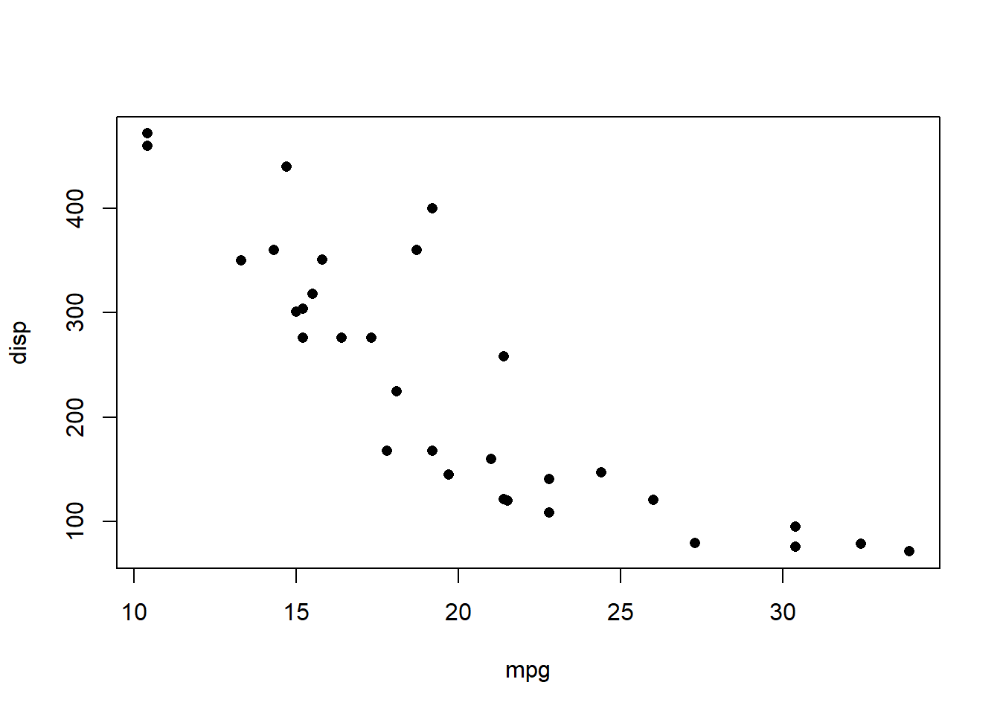
The option pch=16 sets the plotting character to a solid black dot. More plot characters are available - examine the help for points() to see these:
?pointsstarting httpd help server ... doneThis plot can be improved greatly. We can specify more informative axis labels, change size of the text and of the plotting symbol, and so on.
We can also specify the same plot by passing named variables to the plot function directly as well as other parameters, as in the figure. Notice how the syntax for this is different to the plot function above, and the different parameters that are passed to the plot() function:
plot(x = mtcars$mpg, y = mtcars$disp, pch = 1, col = "dodgerblue",
cex = 1.5, xlab = "Miles per Gallon", ylab = "Displacement",
main = "Hello World!")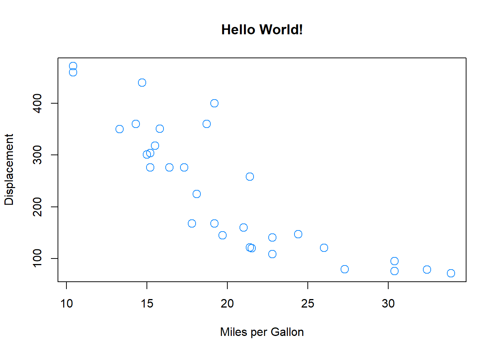
Figure 1.3: A scatter plot.
Notice how the dollar sign ($) is used to access variables in the mtcars data table compared to the first plot command, which specified data = mtcars.
We may for example require information on variables in mtcars. The summary function is very useful:
summary(mtcars) mpg cyl disp hp
Min. :10.40 Min. :4.000 Min. : 71.1 Min. : 52.0
1st Qu.:15.43 1st Qu.:4.000 1st Qu.:120.8 1st Qu.: 96.5
Median :19.20 Median :6.000 Median :196.3 Median :123.0
Mean :20.09 Mean :6.188 Mean :230.7 Mean :146.7
3rd Qu.:22.80 3rd Qu.:8.000 3rd Qu.:326.0 3rd Qu.:180.0
Max. :33.90 Max. :8.000 Max. :472.0 Max. :335.0
drat wt qsec vs
Min. :2.760 Min. :1.513 Min. :14.50 Min. :0.0000
1st Qu.:3.080 1st Qu.:2.581 1st Qu.:16.89 1st Qu.:0.0000
Median :3.695 Median :3.325 Median :17.71 Median :0.0000
Mean :3.597 Mean :3.217 Mean :17.85 Mean :0.4375
3rd Qu.:3.920 3rd Qu.:3.610 3rd Qu.:18.90 3rd Qu.:1.0000
Max. :4.930 Max. :5.424 Max. :22.90 Max. :1.0000
am gear carb
Min. :0.0000 Min. :3.000 Min. :1.000
1st Qu.:0.0000 1st Qu.:3.000 1st Qu.:2.000
Median :0.0000 Median :4.000 Median :2.000
Mean :0.4062 Mean :3.688 Mean :2.812
3rd Qu.:1.0000 3rd Qu.:4.000 3rd Qu.:4.000
Max. :1.0000 Max. :5.000 Max. :8.000 This shows different summaries of the individual attributes in mtcars.
The main R graphics function is plot(). In addition to plot() there are functions for adding points and lines to existing graphs, for placing text at specified positions, for specifying tick marks and tick labels, for labelling axes, and so on.
There are various other alternative helpful forms of graphical summary. A helpful graphical summary for the mtcars data frame is the scatterplot matrix, shown in Figure 1.4.
# return the names of the mtcars variables
names(mtcars) [1] "mpg" "cyl" "disp" "hp" "drat" "wt" "qsec" "vs" "am" "gear"
[11] "carb"# return the 3rd to 7th names
names(mtcars)[c(3:7)][1] "disp" "hp" "drat" "wt" "qsec"# check what this does
c(3:7)[1] 3 4 5 6 7# plot the 3rd to 7th variables in mtcars
plot(mtcars[, c(3:7)], cex = 0.5,
col = "red", upper.panel=panel.smooth)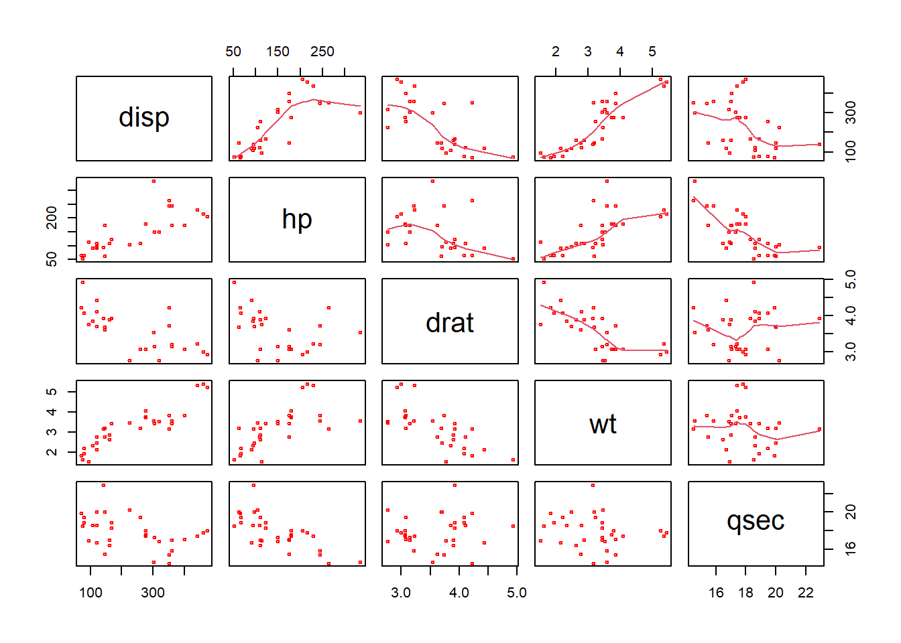
Figure 1.4: Multiple scatterplots.
The results show the correlations between the variables in the mtcars data frame, and the trend of their relationship is included with the upper.panel=panel.smooth parameter passed to plot.
There are number of things to notice here (as well as the figure). In particular note the use of the vector c(2:7) to subset the columns of mtcars:
In the second line, this is was used to subset the vector of column names created by names(mtcars).
In the third line, it was printed out. Notice how 3:7 printed out all the number between 3 and 7 - very useful.
For the plot, the vector was passed to the second argument, after the comma, in the square brackets [,] to indicate which columns were to be plotted.
The referencing in this way (or indexing) is very important: the individual rows and columns of 2 dimensional data structures like data frames, matrices, tibbles etc can be accessed by passing references to them in the square brackets.
# 1st row
mtcars[1,] mpg cyl disp hp drat wt qsec vs am gear carb
Mazda RX4 21 6 160 110 3.9 2.62 16.46 0 1 4 4# 3rd column
mtcars[,3] [1] 160.0 160.0 108.0 258.0 360.0 225.0 360.0 146.7 140.8 167.6 167.6 275.8
[13] 275.8 275.8 472.0 460.0 440.0 78.7 75.7 71.1 120.1 318.0 304.0 350.0
[25] 400.0 79.0 120.3 95.1 351.0 145.0 301.0 121.0# a selection of rows
mtcars[c(3:5,8),] mpg cyl disp hp drat wt qsec vs am gear carb
Datsun 710 22.8 4 108.0 93 3.85 2.320 18.61 1 1 4 1
Hornet 4 Drive 21.4 6 258.0 110 3.08 3.215 19.44 1 0 3 1
Hornet Sportabout 18.7 8 360.0 175 3.15 3.440 17.02 0 0 3 2
Merc 240D 24.4 4 146.7 62 3.69 3.190 20.00 1 0 4 2Such indexing could of course have been assigned to a R object and used to do the subsetting:
x = c(3:7)
names(mtcars)[x][1] "disp" "hp" "drat" "wt" "qsec"Thus indexing allows specific rows and columns to be extracted from the data as required.
Note You have encountered a second type of brackets, square brackets [ ]. These are used to reference or index positions in a vector or a data table.
Consider the object x above. It contains a vector of values, 3,4,5,6,7. Entering x[1] would extract the first element of x, in this case 3. Similarly x[4] would return the 4th element and x[c(1,4)] would return the 1st and 4th elements of x.
However, in the examples above that index the 2-dimensional mtcars object, the square brackets are used to index row and column positions. The syntax for this is [rows, columns]. We will be using such indexing throughout this module.
You can ask R to return you specific rows and columns by different ways:
mtcars[c(2,9), 3:7] disp hp drat wt qsec
Mazda RX4 Wag 160.0 110 3.90 2.875 17.02
Merc 230 140.8 95 3.92 3.150 22.90mtcars[3:6, c("disp","hp","qsec")] disp hp qsec
Datsun 710 108 93 18.61
Hornet 4 Drive 258 110 19.44
Hornet Sportabout 360 175 17.02
Valiant 225 105 20.22mtcars [, c("wt","gear","cyl")] wt gear cyl
Mazda RX4 2.620 4 6
Mazda RX4 Wag 2.875 4 6
Datsun 710 2.320 4 4
Hornet 4 Drive 3.215 3 6
Hornet Sportabout 3.440 3 8
Valiant 3.460 3 6
Duster 360 3.570 3 8
Merc 240D 3.190 4 4
Merc 230 3.150 4 4
Merc 280 3.440 4 6
Merc 280C 3.440 4 6
Merc 450SE 4.070 3 8
Merc 450SL 3.730 3 8
Merc 450SLC 3.780 3 8
Cadillac Fleetwood 5.250 3 8
Lincoln Continental 5.424 3 8
Chrysler Imperial 5.345 3 8
Fiat 128 2.200 4 4
Honda Civic 1.615 4 4
Toyota Corolla 1.835 4 4
Toyota Corona 2.465 3 4
Dodge Challenger 3.520 3 8
AMC Javelin 3.435 3 8
Camaro Z28 3.840 3 8
Pontiac Firebird 3.845 3 8
Fiat X1-9 1.935 4 4
Porsche 914-2 2.140 5 4
Lotus Europa 1.513 5 4
Ford Pantera L 3.170 5 8
Ferrari Dino 2.770 5 6
Maserati Bora 3.570 5 8
Volvo 142E 2.780 4 4The base installation of R includes many functions and commands. However, more often we are interested in using some particular functionality, encoded into packages contributed by the R developer community. Installing packages for the first time can be done at the command line in the R console using the install.packages command as in the example below to install the tmap library or via the RStudio menu via Tools > Install Packages.
When you install these packages it is strongly suggested you also install the dependencies. These are other packages that are required by the package that is being installed. This can be done by selecting check the box in the menu or including dep=TRUE in the command line as below (don’t run this yet!):
# don't run this!
install.packages("tidyverse", dep = TRUE)You may have to set a mirror site from which the packages will be downloaded to your computer. Generally you should pick one that is nearby to you.
Further descriptions of packages, their installation and their data structures will be given as needed in the practicals. There are literally 1000s of packages that have been contributed to the R project by various researchers and organisations. These can be located by name at http://cran.r-project.org/web/packages/available_packages_by_name.html if you know the package you wish to use. It is also possible to search the CRAN website to find packages to perform particular tasks at http://www.r-project.org/search.html. Additionally many packages include user guides and vignettes as well as a PDF document describing the package and listed at the top of the index page of the help files for the package.
As well as tidyverse you should install the sf package and dependencies. So we have 2 packages to install:
sf for spatial data and spatial objects
tidyverse for lots of lovely data science things - see https://www.tidyverse.org
You could do this in one go and this will take a bit of time:
install.packages(c("sf", "tidyverse"), dep = TRUE)Remember: you will only have to install a package once!! So when the above code has run in your script you should comment it out. For example you might want to include something like the below in your R script.
# packages only need to be loaded once
# install.packages(c("sf", "tidyverse"), dep = TRUE)Once the package has been installed on your computer then the package can be called using the library() function into each of your R sessions as below.
library(tidyverse)
library(sf)Now we use these basic R command and newly installed packages to start our initial exploration by using some existing secondary dataset from the Census 2021.
In R we normally read in tabular dataset from .csv format. In your Week 1 data folder, you can find one .csv dataset: merseyside.csv. You can open them in excel to have a look, but here we are using R instead of Excel to load and examine them.
The survey data can be loaded into RStudio using the read.csv function.
However, you will need to tell R where to get the data from. The easiest way to do this is to use the menu if the R script file is open. Go to Session > Set Working Directory > To Source File Location to set the working directory to the location where your week1.R script is saved. When you do this you will see line of code print out in the Console (bottom left pane) similar to setwd("SomeFilePath"). You can copy this line of code to your script and paste into the line above the line calling the read.csv function.
# use read.csv to load a CSV file
# this is assignment to an object called `df`
df = read.csv(file = "merseyside.csv", stringsAsFactors = TRUE)The stringsAsFactors = TRUE parameter tells R to read any character or text variables as classes or categories and not as just text.
You could inspect the help for the read.csv function to see the different parameters and their default values:
help(read.csv)
# or
?read.csvFunctions always return something and in this case read.csv() function has returned a tabular R object with 5 records and 14 fields. This has been assigned to df.
Finally in this section, lets have a look at the data. This can be done in a number of ways.
you could look at the df object by entering df in the Console. However this is not particular helpful as it simply prints out everything that is in df to the Console.
you could click on the df object in the Environment pane and this shows the structure of the attributes in different fields.
you could click on the little grid-like icon next df in the Environment pane to get a View of the data and remember to close the tab that opens!.
or you could use some code as in the examples below.
First, let’s have a look at the internal structure of the data using the str function:
str(df)'data.frame': 5 obs. of 12 variables:
$ LAD21CD : Factor w/ 5 levels "E08000011","E08000012",..: 1 2 3 4 5
$ District : Factor w/ 5 levels "Knowsley","Liverpool",..: 1 2 4 3 5
$ Population : int 154519 486089 183248 279234 320196
$ Households : int 66073 207491 81011 123075 143253
$ Working_population: int 69495 205749 82622 124596 139500
$ Students : int 7050 59628 7582 12636 14642
$ Unemployed : int 3852 13894 4076 6143 6542
$ Age_over_65 : int 26242 74322 37642 64763 70391
$ Disability : int 34990 105962 40829 61134 73088
$ No_central_heating: int 1020 4822 1003 1965 2125
$ Overcrowding : int 1892 7352 1888 2700 2355
$ Working_from_home : int 14880 53721 18973 34750 37299The head function does this by printing out the first six records of the data table and you may need to scroll up and down in the Console pane to see all of what is returned.
head(df) LAD21CD District Population Households Working_population Students
1 E08000011 Knowsley 154519 66073 69495 7050
2 E08000012 Liverpool 486089 207491 205749 59628
3 E08000013 St. Helens 183248 81011 82622 7582
4 E08000014 Sefton 279234 123075 124596 12636
5 E08000015 Wirral 320196 143253 139500 14642
Unemployed Age_over_65 Disability No_central_heating Overcrowding
1 3852 26242 34990 1020 1892
2 13894 74322 105962 4822 7352
3 4076 37642 40829 1003 1888
4 6143 64763 61134 1965 2700
5 6542 70391 73088 2125 2355
Working_from_home
1 14880
2 53721
3 18973
4 34750
5 37299Another way to explore the data is through the summary function:
summary(df) LAD21CD District Population Households
E08000011:1 Knowsley :1 Min. :154519 Min. : 66073
E08000012:1 Liverpool :1 1st Qu.:183248 1st Qu.: 81011
E08000013:1 Sefton :1 Median :279234 Median :123075
E08000014:1 St. Helens:1 Mean :284657 Mean :124181
E08000015:1 Wirral :1 3rd Qu.:320196 3rd Qu.:143253
Max. :486089 Max. :207491
Working_population Students Unemployed Age_over_65
Min. : 69495 Min. : 7050 Min. : 3852 Min. :26242
1st Qu.: 82622 1st Qu.: 7582 1st Qu.: 4076 1st Qu.:37642
Median :124596 Median :12636 Median : 6143 Median :64763
Mean :124392 Mean :20308 Mean : 6901 Mean :54672
3rd Qu.:139500 3rd Qu.:14642 3rd Qu.: 6542 3rd Qu.:70391
Max. :205749 Max. :59628 Max. :13894 Max. :74322
Disability No_central_heating Overcrowding Working_from_home
Min. : 34990 Min. :1003 Min. :1888 Min. :14880
1st Qu.: 40829 1st Qu.:1020 1st Qu.:1892 1st Qu.:18973
Median : 61134 Median :1965 Median :2355 Median :34750
Mean : 63201 Mean :2187 Mean :3237 Mean :31925
3rd Qu.: 73088 3rd Qu.:2125 3rd Qu.:2700 3rd Qu.:37299
Max. :105962 Max. :4822 Max. :7352 Max. :53721 Finally in this section, we come back to the dollar sign ($). This is used to refer to or extract an individual named field or variable in an R object, like df.
The code below prints out the Population attribute and generates a summary of its values:
# extract an individual variable
df$Population[1] 154519 486089 183248 279234 320196# generate a summary of an individual variable
summary(df$Population) Min. 1st Qu. Median Mean 3rd Qu. Max.
154519 183248 279234 284657 320196 486089 And of course we can use such operations to assign the result to new R objects. The code below extracts three variables from df, assigns them to x, y and z, and then uses the data.frame function to convert these into a new data.frame object called my_df
# extract three variables, assigning them to temporary R objects
x = df$District
y = df$Working_population
z = df$Students
# create a data.frame from these, naming the new variables
my_df = data.frame(district = x,worker = y,student = z)You should have a look at what you have created:
head(my_df) district worker student
1 Knowsley 69495 7050
2 Liverpool 205749 59628
3 St. Helens 82622 7582
4 Sefton 124596 12636
5 Wirral 139500 14642summary(my_df) district worker student
Knowsley :1 Min. : 69495 Min. : 7050
Liverpool :1 1st Qu.: 82622 1st Qu.: 7582
Sefton :1 Median :124596 Median :12636
St. Helens:1 Mean :124392 Mean :20308
Wirral :1 3rd Qu.:139500 3rd Qu.:14642
Max. :205749 Max. :59628 The temporary R objects can be removed from the Environment using the rm function and a combine vector function, c() that you encountered in Week 19, that takes a vector of object names (hence they are in quotes) as its arguments.
rm(list = c("x","y","z"))Now we can do some basic data manipulation to know Merseyside more from the data perspective.
What is the total population in Merseyside?
sum(df$Population)[1] 1423286What is the total number of full-time students in Merseyside?
sum(df$Students)[1] 101538Which district in Merseyside has the most working population?
max(df$Working_population)[1] 205749Yes, using max() R returns use the greatest value in Working.population column. If we check back to the dataset, we know it is Liverpool. Instead, we can also ask R to tell us the answer.
First, we ask which row has the maximum Working.population . By using which.max(), we know it is the 2nd row.
position = which.max(df$Working_population)
position[1] 2To print out this row and only the district name and the number of working population. We can use the code below to request R to return the District which has the maximum value of the Working population.
df[position, c("District","Working_population")] District Working_population
2 Liverpool 205749Then, we can calculate the total number of workers that working from home:
sum(df$Working_from_home)[1] 159623What is the proportion of working population actually work from home in Merseyside? Yes, we need to use a division calculation of the total number of working from home vs. all the working population. R can do it by:
sum(df$Working_from_home) / sum(df$Working_population)[1] 0.2566443So the answer is 25.7% for the whole Merseyside - but which district has the highest proportion and which as the lowest? You may have your own guessing. But let R do the calculation:
df$Prop.WFH = df$Working_from_home / df$Working_population #add a new column called Prop.WFH
df #print out the df LAD21CD District Population Households Working_population Students
1 E08000011 Knowsley 154519 66073 69495 7050
2 E08000012 Liverpool 486089 207491 205749 59628
3 E08000013 St. Helens 183248 81011 82622 7582
4 E08000014 Sefton 279234 123075 124596 12636
5 E08000015 Wirral 320196 143253 139500 14642
Unemployed Age_over_65 Disability No_central_heating Overcrowding
1 3852 26242 34990 1020 1892
2 13894 74322 105962 4822 7352
3 4076 37642 40829 1003 1888
4 6143 64763 61134 1965 2700
5 6542 70391 73088 2125 2355
Working_from_home Prop.WFH
1 14880 0.2141161
2 53721 0.2610997
3 18973 0.2296362
4 34750 0.2789014
5 37299 0.2673763Here we ask R to add a new column named Prop.WFH which is the working from home proportion that calculated by the number of working from home people in each district divided by the total working population in that district. R will automatically do it row-by-row. We then print out the df, you may find at the very right end of the tabular, there is a new column called Prop.WFH.
You already know how to identify the district with the maximum value, but what if we want a rank districts from highest to lowestsmall ?
order(-df$Prop.WFH)[1] 4 5 2 3 1df[order(-df$Prop.WFH),c("District","Prop.WFH")] District Prop.WFH
4 Sefton 0.2789014
5 Wirral 0.2673763
2 Liverpool 0.2610997
3 St. Helens 0.2296362
1 Knowsley 0.2141161For a very small dataframe like this, we can also using View() to open a new tab to review the data, where each column can be sorted from largest to smallest or vice versa. Try viewing it by using:
View(df)Now let’s try to do our first map in R and allow yourself know more about Merseyside.
We will use the library sf and tmap to help us at here. Run the install codes if you haven’t install them. Remember: you will only have to install a package once!!
install.packages("tmap",dep =TRUE)Check the package version of tmap, as here we need to use tmap over 4.0 version.
packageVersion("tmap") # the version should over 4.0[1] '4.1'When they have been installed, we can start using them
library(tidyverse)
library(sf)
library(tmap)You may find in Week 1 data, we have another file named merseyside_districts.gpkg. A GeoPackage (GPKG) is a file-based format designed for storing geographic data. It supports the efficient storage and exchange of spatial datasets and can be readily used across GIS software such as QGIS and ArcGIS, as well as in programming environments including R and Python.
We first read it in by using the st_read() command in library sf.
sf <- st_read("merseyside_districts.gpkg")Reading layer `lad_may_2025_uk_bgc_v2_4306843991635065087__lad_may_2025_uk_bgc_v2' from data source `C:\Users\ziye\Documents\GitHub\quant\labs\merseyside_districts.gpkg'
using driver `GPKG'
Simple feature collection with 5 features and 8 fields
Geometry type: MULTIPOLYGON
Dimension: XY
Bounding box: xmin: 318351.7 ymin: 377515.4 xmax: 361796.3 ymax: 422866.5
Projected CRS: OSGB36 / British National GridThe fastest way to map it is the qtm() function.
qtm(sf)
You can also add the district names on the map - which column in the sf contains district name? Use names(sf) to check for it.
Yes, the column should be LAD25NM. Now let’s ask qtm() to also show the district names.
qtm(sf,text="LAD25NM")
But what if we want to make some meaningful maps, rather than just the boundaries of these five districts of Merseyside?
Recall that in our df, we have 14 columns, containing different information about the districts. We can get all their names by using names().
names(df) [1] "LAD21CD" "District" "Population"
[4] "Households" "Working_population" "Students"
[7] "Unemployed" "Age_over_65" "Disability"
[10] "No_central_heating" "Overcrowding" "Working_from_home"
[13] "Prop.WFH" We can do the same thing for our geographical dataset sf to see what it includes:
names(sf)[1] "LAD25CD" "LAD25NM" "LAD25NMW" "BNG_E" "BNG_N" "LONG" "LAT"
[8] "GlobalID" "geom" We can also show the whole sf as
sfSimple feature collection with 5 features and 8 fields
Geometry type: MULTIPOLYGON
Dimension: XY
Bounding box: xmin: 318351.7 ymin: 377515.4 xmax: 361796.3 ymax: 422866.5
Projected CRS: OSGB36 / British National Grid
LAD25CD LAD25NM LAD25NMW BNG_E BNG_N LONG LAT
1 E08000011 Knowsley 344762 393778 -2.832979 53.43789
2 E08000012 Liverpool 339359 390556 -2.913680 53.40833
3 E08000013 St. Helens 353413 395992 -2.703093 53.45862
4 E08000014 Sefton 334282 398835 -2.991771 53.48213
5 E08000015 Wirral 329109 386965 -3.067034 53.37478
GlobalID geom
1 {B4196BFE-EE90-4C31-ABD5-C7E743AE2F9B} MULTIPOLYGON (((341447.1 40...
2 {4FB47E7A-EF4E-4B9E-BF75-D4FC059CDE61} MULTIPOLYGON (((338860.9 39...
3 {943F0C6B-EB30-4C00-A42B-F6B3AEC3EFEE} MULTIPOLYGON (((349111.4 40...
4 {C6FD073B-CBEB-4E78-934A-A8FD11A20F0A} MULTIPOLYGON (((336374.5 42...
5 {88E9328B-371C-469C-91F1-3479C77D6950} MULTIPOLYGON (((331364.9 39...Now we see that sf includes also the five districts, but also other geographical information. You may notice that although different column names, the first two columns of both df and sf are the district code and district name. This means what potentially we can link this two dataset together - appendix the df to sf to enrich the attributes of our geographical dataset.
merseyside <- left_join(sf, df,by=c("LAD25NM"="District"))let’s check out the new sf2 by View() it:
View(merseyside)In the open tab, we see all the df columns are now also attached to the sf, linking by the district names.
Now, we can use those new columns we attached from df to sf2 to make some meaningful choropleth maps! Here we make use of the mapping functions in tmap (Remember to run library(tmap) if you haven’t) to do the work for us.
tmap has a basic syntax (again, do not run this code - its is simply showing the syntax of tmap):
# don't run this or write this into your script!
tm_shape(data = <data>)+
tm_<function>(<variable to be mapped>)For example, to map the boundaries of merseyside:
tm_shape(merseyside) +
tm_borders()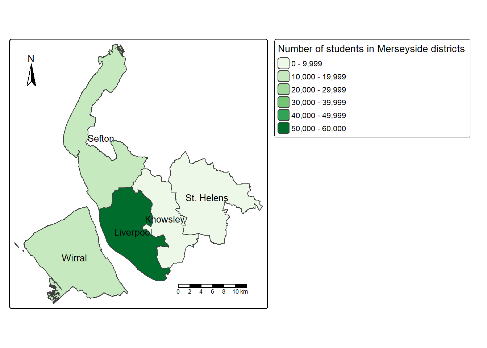
To add label of district:
tm_shape(merseyside) +
tm_borders() +
tm_text("LAD25NM")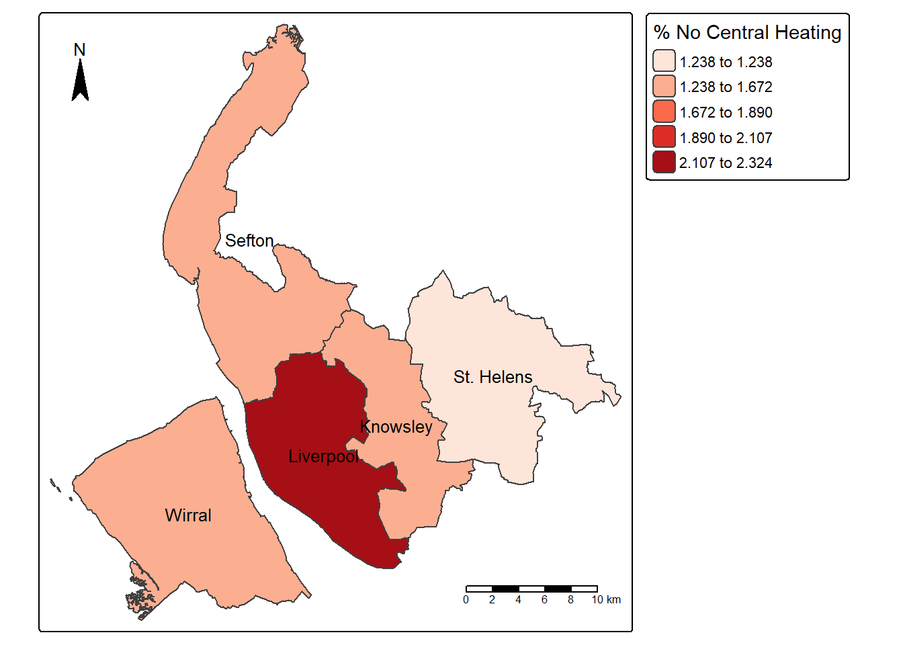
You might assume the quick mapping function qtm() can achieve the same result, but tmap provides far more flexibility when it comes to aesthetic customization. The easiest way to illustrate tmap is through some examples.
Let’s start with a simple choropleth map, by using tmap to show the distribution of a continuous variable in different elements of the spatial data (here are the data Merseyside districts are polygons).
The code below maps `Students’ as in the Merseyside districts, and shows the district names of each polygon from ‘LAD25NM’ columns. The map below indicates that Liverpool has the highest number of full-time students while Knowsley and St.Helens have the least.
tm_shape(merseyside) +
tm_polygons(fill = "Students") + # Variable to map
tm_text("LAD25NM") # Variable to label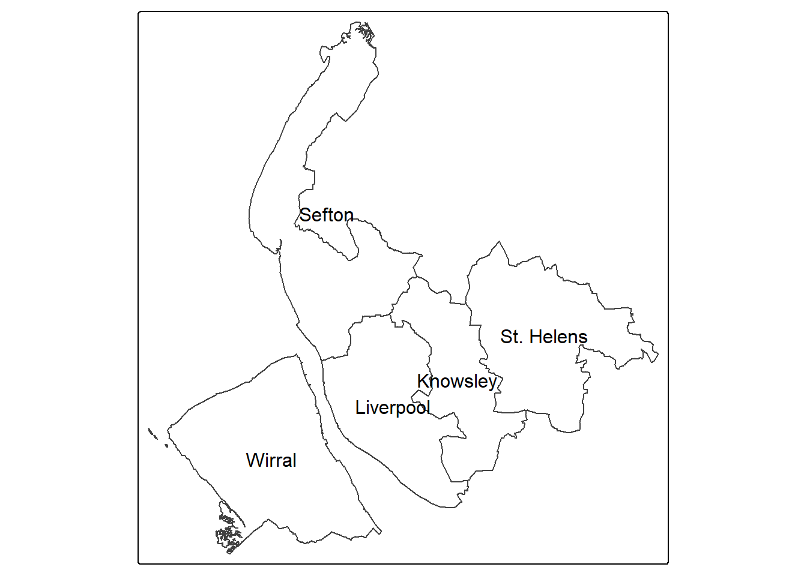
By default tmap picks a shading scheme, the class breaks and places a legend somewhere. All of these can be changed. The code below allocates the tmap plot to map1 (Map 1), change the legend title as “Number of students in Merseyside districts”, and then prints it:
map1 = tm_shape(merseyside) +
tm_polygons(fill="Students",
fill.scale = tm_scale(values = "Greens"), # change palette to greens
fill.legend = tm_legend(title = "Number of students in Merseyside districts")
) +# Legend title
tm_text("LAD25NM")
map1
And of course many other elements included either by running the code snippet defining map1 above with additional lines or by simply adding them as in the code below:
map1 +
tm_scalebar(position = c("right", "bottom")) +
tm_compass(position = c("left", "top")) # Use "top", "center", or "bottom"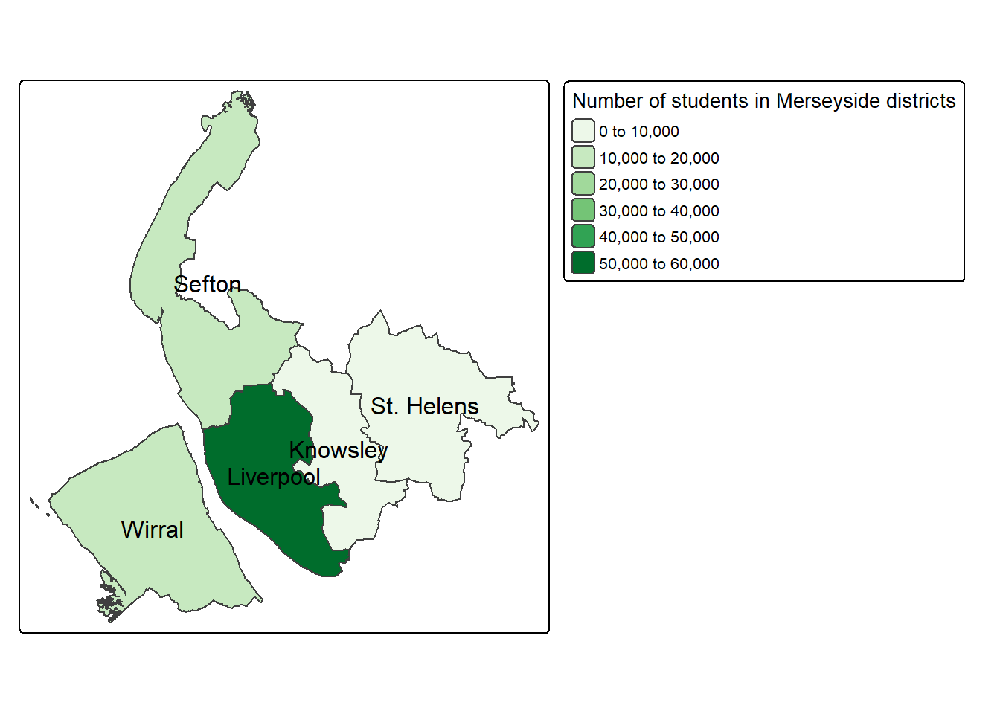
We can also create new variable to the dataset and then map it. The below code chunk first creates a new column, “NoCentralHeating_rate”, by dividing the number of households without access to central heating by the total number of households in each district; it then uses tmap to make a map of the proportion of households without central heating across districts in Merseyside:
merseyside$NoCentralHeating_rate = merseyside$No_central_heating / merseyside$Households * 100
map2 = tm_shape(merseyside) +
tm_polygons(fill="NoCentralHeating_rate",
fill.scale = tm_scale(values = "Reds", style = "jenks"), #use jenks classification rather than equal
fill.legend = tm_legend(title = "% No Central Heating")) +
tm_text("LAD25NM") +
tm_scalebar(position = c("right", "bottom")) + # Add a scale bar at the top-right corner
tm_compass(position = c("left", "top")) # Add a compass rose at the top-right corner
map2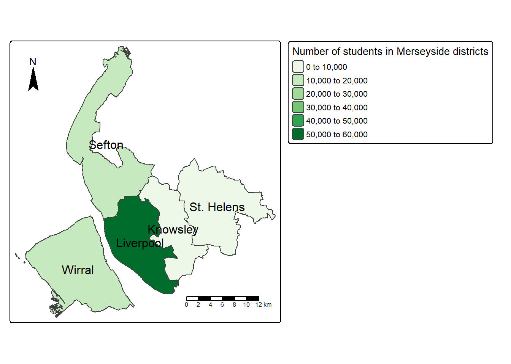
Now let’s read in the neighbourhood-level datasets, which include a .csv file of local statistics and the corresponding geographical boundaries.
lsoa_df <- read.csv("merseyside_lsoa.csv")
lsoa_sf <- st_read("LSOA_boundaries.gpkg")Reading layer `merseyside_LSOA' from data source
`C:\Users\ziye\Documents\GitHub\quant\labs\LSOA_boundaries.gpkg'
using driver `GPKG'
Simple feature collection with 923 features and 4 fields
Geometry type: MULTIPOLYGON
Dimension: XY
Bounding box: xmin: -3.200368 ymin: 53.2963 xmax: -2.576743 ymax: 53.6982
Geodetic CRS: WGS 84First, we take a look at the .csv dataset, which as been read into R as lsoa_df:
View(lsoa_df)Use the quick mapping function qtm() to quickly inspect the geographical boundary dataset lsoa_sf
qtm(lsoa_sf)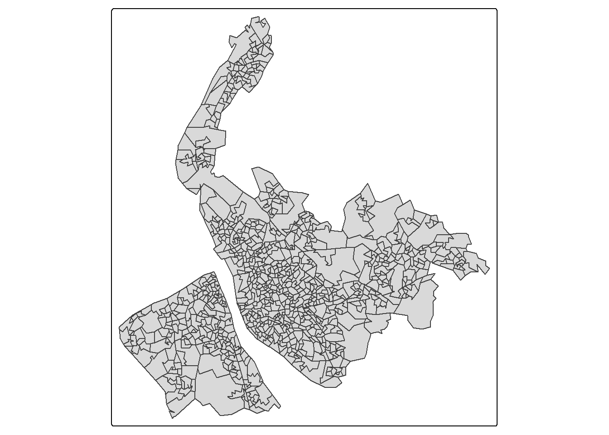
To familiarise yourself with the structures of both datasets, we can use the names() command
names(lsoa_df) [1] "LSOA21CD" "Population" "Households"
[4] "Working_population" "Students" "Unemployed"
[7] "Age_over_65" "Disability" "No_central_heating"
[10] "Overcrowding" "Working_from_home" names(lsoa_sf)[1] "LSOA21CD" "LSOA21NM" "LAD23CD" "LAD23NM" "geom" You may find that both dataset are recorded at the LSOA level, with LSOA21CD as the key column. As we did with the district-level dataset, we can use left_join() to join these two dataset by their sharing field - LSOA21CD:
lsoa <- left_join(lsoa_sf,lsoa_df,by="LSOA21CD")Now let’s check the columns of new dataframe lsoa:
names(lsoa) [1] "LSOA21CD" "LSOA21NM" "LAD23CD"
[4] "LAD23NM" "Population" "Households"
[7] "Working_population" "Students" "Unemployed"
[10] "Age_over_65" "Disability" "No_central_heating"
[13] "Overcrowding" "Working_from_home" "geom" Or open a new tab to view the newly created dataset lsoa by
View(lsoa)We can see that some columns contain counts, such as the number of residential population, number of households, number of working population, and number of students. Other columns are expressed as percentages, including unemployment, population aged 65 and over, disability, households without central heating, overcrowded households, and people working from home.
Using the Unemployed column, we can create a map of the unemployment rate across neighbourhoods in Merseyside. Instead of using the default equal-interval breaks, this time we will use a jenks classification with six categories.
map3 = tm_shape(lsoa) +
tm_fill(
fill = "Unemployed",
fill.scale = tm_scale(values = "GnBu",
style = "jenks",
n = 6), #use jenks classification of 6 categories
fill.legend = tm_legend(title = "% Unemployed")
) +
tm_layout(legend.position = c("right", "top"))
map3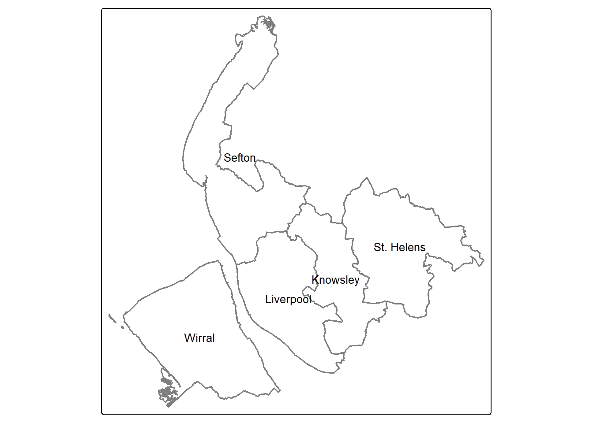
The above code uses tm_layout(legend.position = c("right", "top")) to move the legend inside the map frame, positioning it at the right-top corner.
Change tm_fill() to tm_polygons() to see how the map is different?
Yes, the tm_polygons() is a condense version of tm_fill() + tm_border(). Here if you want show all the LSOA borders, change tm_fill() to tm_polygons().
tmap also supports adding or overlayomg other data, such as boundaries. Because these are additonal spatial data layers, they needs to be added with tm_shape() followed by the usual function.
Remember we use the code chunk to make the district boundaries of Merseyside? This time let’s change the aesthetic by using grey color as the border color and increase the line width, then we save it also as a tmap object called map_district:
map_district = tm_shape(merseyside) +
tm_borders(col = "grey50",lwd=1.5) + #border color as grey, line width as 1.5
tm_text("LAD25NM")
map_district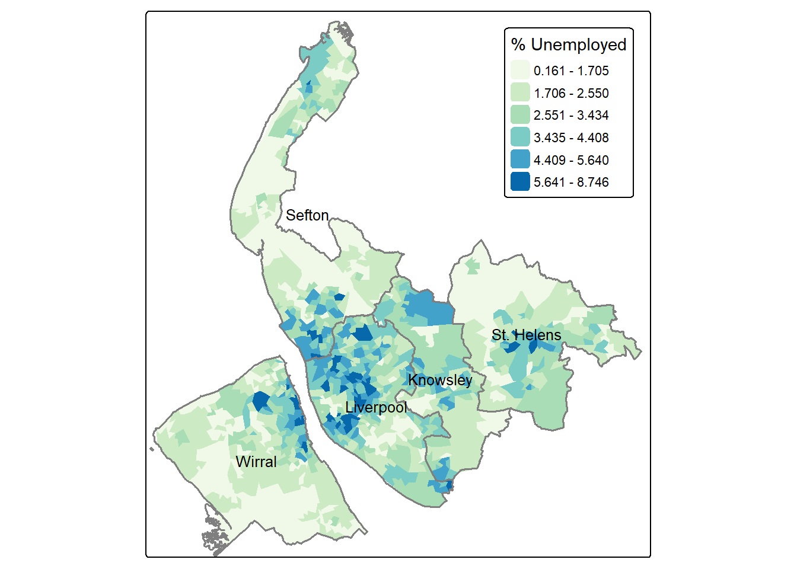
To display both tmap layers together, we can proceed as follows:
map3 + map_district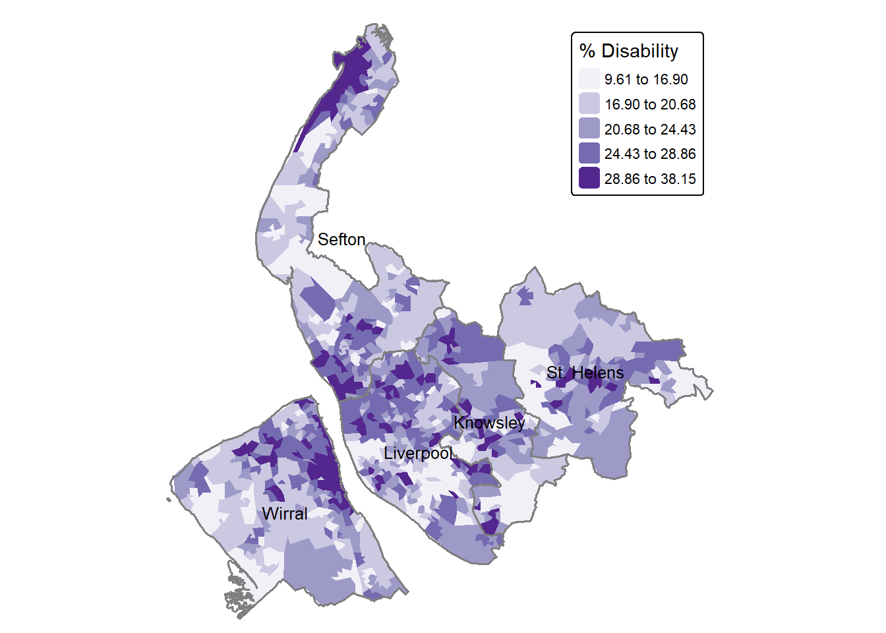
Now, let’s move to making some more maps - this time showing the proportion of disability across neighbourhoods in Merseyside. Referring back to the columns in lsoa, this time we use the Disability variable. The code below applies a jenks classification and use a different color palette Purples. Also the map frame is removed by frame = FALSE.
tm_shape(lsoa) +
tm_fill(fill = "Disability",
fill.scale = tm_scale(values="Purples",
style = "jenks",
n=5),
fill.legend = tm_legend(title = "% Disability")
) +
tm_layout(legend.position = c("right", "top"),
frame = FALSE)+
map_districtSimilarly, we can make maps from new columns we made ourselves. For example, we can calculate the percentage of student by adding a new column to the dataframe:
lsoa$student.perc = lsoa$Students / lsoa$Population * 100To make a map to visualisation the spatial distribution of student percentage. The code below uses n=6 to increase the classification categories to 6 rather than default 5.
tm_shape(lsoa) +
tm_fill(fill = "student.perc",
fill.scale = tm_scale(values="Blues",
style = "jenks",
n=6),
fill.legend = tm_legend(title = "% of Student",
title.size = 0.8) #legend title change smaller font
) +
tm_layout(main.title = "Merseyside",
frame = FALSE,
legend.position = c("right", "top"))+
map_district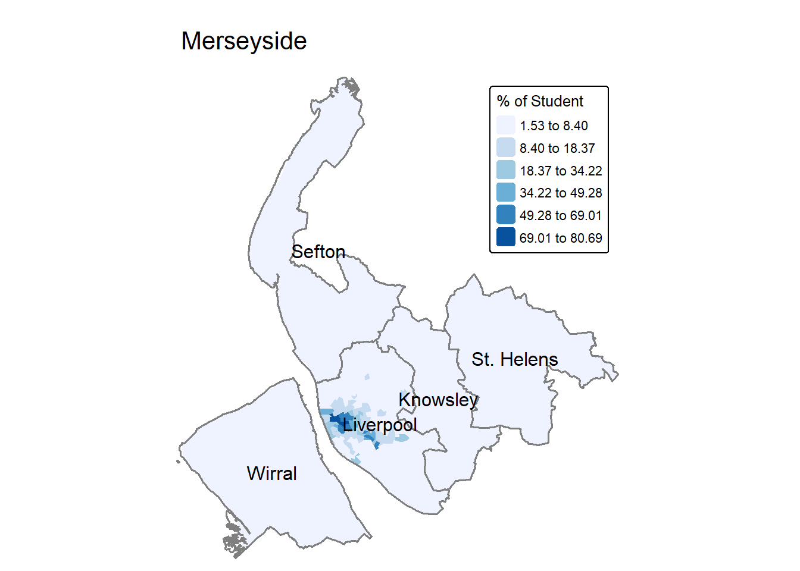
To change the palette, R tidyverse library provide:
RColorBrewer::display.brewer.all()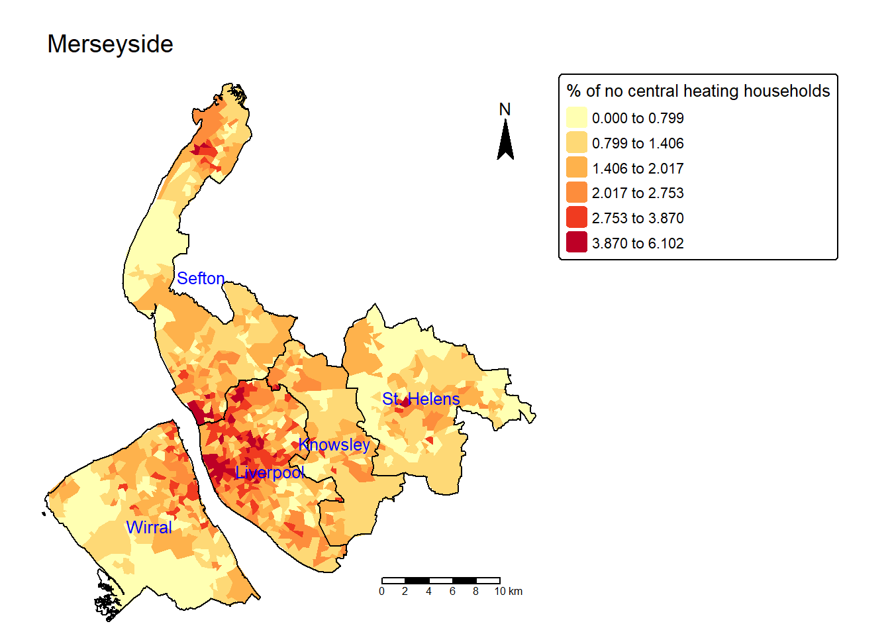
If we want to make a map to show the rate of no central heating households in all the neighbourhoods in Merseyside:
lsoa$no.central.heating.perc = lsoa$No_central_heating / lsoa$Households * 100
tm_shape(lsoa) +
tm_fill(fill = "no.central.heating.perc",
fill.scale = tm_scale(values="YlOrRd",
style = "jenks",
n=6),
fill.legend = tm_legend(title = "% of no central heating households",
title.size = 0.8)
) +
tm_layout(main.title = "Merseyside",
main.title.size=1.2,
frame = FALSE) +
map_district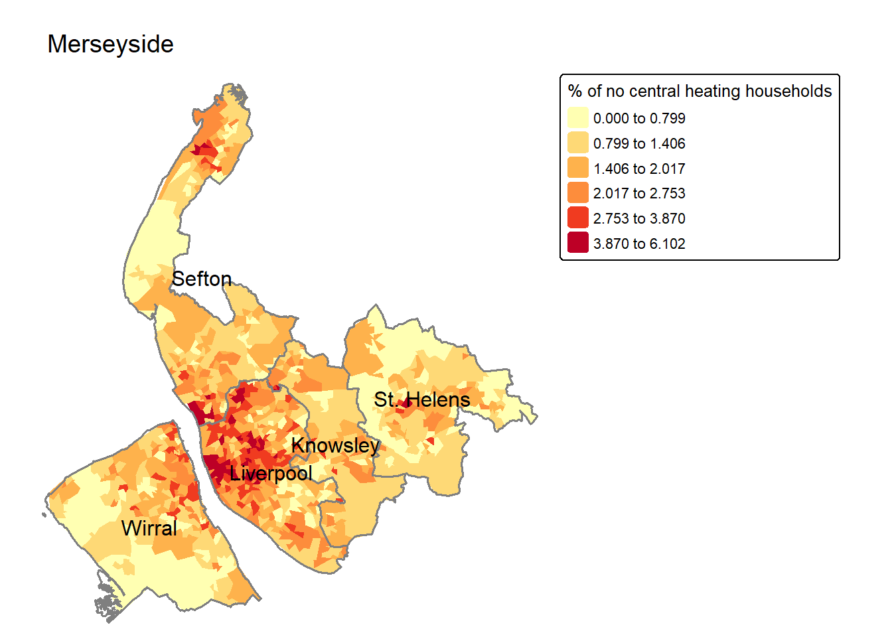
The code below combines all the cartographic elements together
tm_shape(lsoa) +
tm_fill(fill = "no.central.heating.perc",
fill.scale = tm_scale(values="YlOrRd",
style = "jenks",n=6),
fill.legend = tm_legend(title = "% of no central heating households",
title.size = 0.8)
) +
tm_layout(main.title = "Merseyside",
main.title.size=1.2,
frame = FALSE) +
tm_compass(position = c("right", "top")) +
tm_scalebar(position = c("right", "bottom")) +
tm_shape(merseyside) + # Add another spatial layer (Merseyside boundary)
tm_borders(col = "black", lwd = 1) + # Draw the boundaries with black lines of width 1
tm_text("LAD25NM",col = "blue",size = 0.8)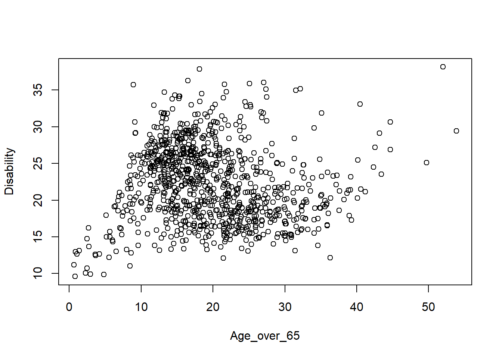
The aim of this session has been to familiarise you with the R environment if you have not used R before. If you have but not for a while, then hopefully this has acted as a refresher. Some key things to take away are:
R is a learning curve, and like driving the more your practice the better you become.
Your job is to try to understand what the code is doing and not to remember the code.
To help with this, you should add your own comments to the script to help you understand what is going on when you return to them. Comments are prefaced by a hash (#) that is ignored by R.
Always set your working directory to the sub-folder containing your R script.
Always run your code from an R script… always!
The reading for this week is Harris (2016) Chapter 12 up to page 282. You do not have to install any packages (Section 12.2), packages will be introduced in Week 20, but you should try some of the code. Go through the illustrations in Section 12.3 (The Basics of R, starting p253), entering commands with your comments in the script (prep.R) that you created above.
Optionally you could also briefly read or skim Section 12.3 - the sections are mis-numbered (A Geographical Introduction to R, starting p261), as we will cover these in more detail in subsequent weeks and modules. Go through the Section 12.3 (A Little More about the Workings of R, starting on p268), again entering commands in the script that you created above. Don’t worry about regression (top of p273) we will cover this later, but pay attention to Data Frames (p274), Referencing rows and columns (p275) and Subsetting (p279). Stop at Reading Data (p282).
Other good on-line get started in R guides include:
The Owen guide (only up to page 28) : https://cran.r-project.org/doc/contrib/Owen-TheRGuide.pdf
An Introduction to R - https://cran.r-project.org/doc/contrib/Lam-IntroductionToR_LHL.pdf
R for beginners https://cran.r-project.org/doc/contrib/Paradis-rdebuts_en.pdf
Recall that a data.frame is a rectangular array of columns of data. Here you will create a data frame of two columns containing numeric values. The following data gives the distance that an elastic band moves when released for each amount it is stretched over the end of a ruler:
elasticband <- data.frame(stretch=c(46,54,48,50,44,42,52),
distance=c(148,182,173,166,109,141,166))
# have a look
elasticband stretch distance
1 46 148
2 54 182
3 48 173
4 50 166
5 44 109
6 42 141
7 52 166The function data.frame() can be used to input these (or other) data directly into data.frame objects.
Task 1 Plot distance against stretch from the elasticband data frame.
Task 2 Get household information of Liverool and Wirral districts from the district level dataset df. The variables need to be included are “Households”, “No_central_heating” and “Overcrowding”.
df LAD21CD District Population Households Working_population Students
1 E08000011 Knowsley 154519 66073 69495 7050
2 E08000012 Liverpool 486089 207491 205749 59628
3 E08000013 St. Helens 183248 81011 82622 7582
4 E08000014 Sefton 279234 123075 124596 12636
5 E08000015 Wirral 320196 143253 139500 14642
Unemployed Age_over_65 Disability No_central_heating Overcrowding
1 3852 26242 34990 1020 1892
2 13894 74322 105962 4822 7352
3 4076 37642 40829 1003 1888
4 6143 64763 61134 1965 2700
5 6542 70391 73088 2125 2355
Working_from_home Prop.WFH
1 14880 0.2141161
2 53721 0.2610997
3 18973 0.2296362
4 34750 0.2789014
5 37299 0.2673763df[c(2,5),c("Households","No_central_heating","Overcrowding")] Households No_central_heating Overcrowding
2 207491 4822 7352
5 143253 2125 2355Task 2 Use district level dataset, how many households all together in Merseyside?
Task 3 Use district level dataset, which district in Merseyside has the most ageing population (age over 65)?
Task 4 Use district level dataset, which district has the highest ageing population rate?
Task 4 Create a map of the spatial distribution of the proportion of ageing population (age over 65) over LSOAs of Merseyside? (use Jenks classification of 7 categories).
Brunsdon, Chris, and Lex Comber. 2018. An Introduction to r for Spatial Analysis and Mapping (2e). Sage.
Comber, Lex, and Chris Brunsdon. 2021. Geographical Data Science and Spatial Data Analysis: An Introduction in r. Sage.
Harris, Richard. 2016. Quantitative Geography: The Basics. Sage.